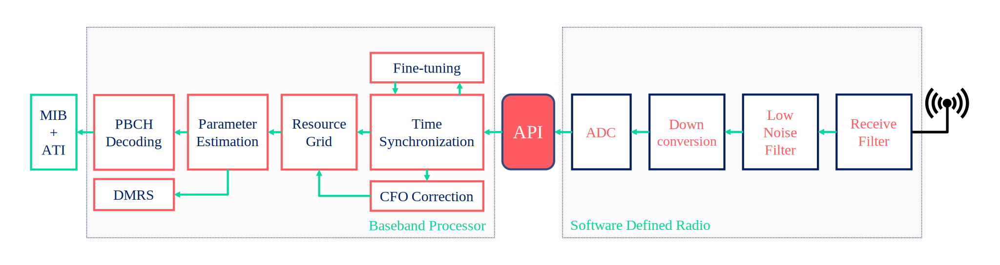
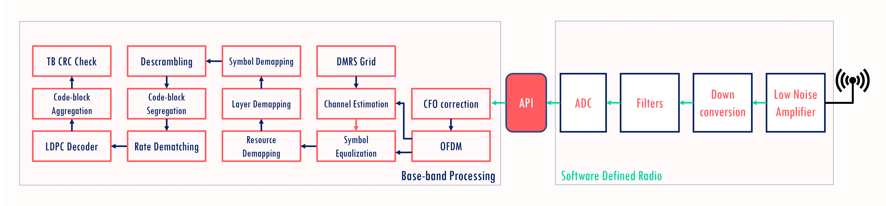

9. UE Side: Downlink Data Communication in 5G Networks
In this project we will demonstrate the transmission and reception of the data from base-station (BS) using low cost SDRs. The whole simulation consists of two parts:
Transmitter side:
Generate the SSB block
Generate the transport block ==> Process it with PDSCH chain ==> Create the slot resource grids
Generate the resource grid and load SSB + PDSCH both into it.
Pass the resource grid through the OFDM modulator: Generate the time domain I/Q samples.
Pass it to the SDR and radiate the signal to the medium.
Receiver side:
Sample the medium to receive the samples and store thm in the buffer.
Downlink synchronization
This is performed using synchronization signal block (SSB).
Helps with
time/frame synchronization.
Coarse CFO correction.
Cell ID detection.
Decoding MIB information.
Data transmission and decoding
9.2. Import Python Libraries
[1]:
# %matplotlib widget
import os
os.environ["CUDA_VISIBLE_DEVICES"] = "-1"
os.environ['TF_CPP_MIN_LOG_LEVEL'] = '3'
import matplotlib.pyplot as plt
import matplotlib.patches as patches
import matplotlib.animation as animation
import numpy as np
import adi
# from IPython.display import display, HTML
# display(HTML("<style>.container { width:98% !important; }</style>"))
9.2. 5G Toolkit Libraries
[2]:
import sys
sys.path.append("../../../../")
from toolkit5G.SequenceGeneration import PSS, SSS, DMRS
from toolkit5G.PhysicalChannels import PBCH
from toolkit5G.ResourceMapping import SSB_Grid, ResourceMapperSSB
from toolkit5G.OFDM import OFDMModulator
from toolkit5G.MIMOProcessing import AnalogBeamforming
from toolkit5G.Configurations import TimeFrequency5GParameters, GenerateValidSSBParameters
from toolkit5G.SequenceGeneration import PSS, SSS, DMRS
from toolkit5G.PhysicalChannels import PBCH, PBCHDecoder
from toolkit5G.ResourceMapping import SSB_Grid, ResourceMapperSSB
from toolkit5G.OFDM import OFDMModulator, OFDMDemodulator
from toolkit5G.MIMOProcessing import AnalogBeamforming, ReceiveCombining
from toolkit5G.ReceiverAlgorithms import PSSDetection, SSSDetection, ChannelEstimationAndEqualization, DMRSParameterDetection
from toolkit5G.Configurations import TimeFrequency5GParameters, GenerateValidSSBParameters
from toolkit5G.PhysicalChannels.PDSCH import ComputeTransportBlockSize
from toolkit5G.PhysicalChannels import PDSCHLowerPhy, PDSCHUpperPhy, PDSCHDecoderLowerPhy, PDSCHDecoderUpperPhy
from toolkit5G.Configurations import PDSCHLowerPhyConfiguration, PDSCHUpperPhyConfiguration
from toolkit5G.SymbolMapping import Mapper, Demapper
from toolkit5G.Scrambler import DeScrambler, Scrambler
from toolkit5G.SymbolMapping import Demapper
from toolkit5G.PhysicalChannels.PDSCH import LayerDemapper
from toolkit5G.PhysicalChannels import PBCHDecoder
from toolkit5G.OFDM import OFDMDemodulator
from toolkit5G.ReceiverAlgorithms import PSSDetection, SSSDetection, ChannelEstimationAndEqualizationPBCH, DMRSParameterDetection, CarrierFrequencyOffsetEstimation, ChannelEstimationAndEqualizationPDSCH
from toolkit5G.PhysicalChannels import PDSCHLowerPhy, PDSCHUpperPhy, PDSCHDecoderLowerPhy, PDSCHDecoderUpperPhy
9.2. Emulation Parameters
[3]:
# Carrier Frequency
carrierFrequency = 1*10**9
numBatches = 9 # Number of batches considered for simulation
scs = 15*10**3 # Subcarrier Spacing for simulation
numBSs = 1 # Number of BSs considered for simulation
bandwidth = 30*10**6
# Number of UEs considered for simulation
numUEs = numBatches # For now we are assuming that the numbatches are captured via numUEs
numRB = 170 # Number of Resource mapping considered for simulation | # 1 RB = 12 subcarrier
slotNumber = 0 # Index of the slot considered for simulation
Nfft = 2048 # FFTSize
Nt = 1
print("************ Simulation Parameters *************")
print()
print(" numBatches: "+str(numBatches))
print(" numRB: "+str(numRB))
print(" fft Size: "+str(Nfft))
print(" numBSs: "+str(numBSs))
print(" numUEs: "+str(numUEs))
print(" scs: "+str(scs))
print(" slotNumber: "+str(slotNumber))
print("Num of Antennas: "+str(Nt))
print()
print("********************************************")
************ Simulation Parameters *************
numBatches: 9
numRB: 170
fft Size: 2048
numBSs: 1
numUEs: 9
scs: 15000
slotNumber: 0
Num of Antennas: 1
********************************************
Time-Frequency Parameters
[4]:
## This class fetches valid set of 5G parameters for the system configurations
nSymbolFrame = 14
numOFDMSymbols = 14
tfParams = TimeFrequency5GParameters(bandwidth, scs, fftsize=Nfft)
tfParams(nSymbolFrame, typeCP = "normal")
nRB = tfParams.numRBs # SSB Grid size (Number of RBs considered for SSB transition)
Neff = nRB*12
lengthCP = (tfParams.lengthCP).astype(np.int32) # CP length
#___________________________________________________________________
print("number of RBs:"+str(nRB))
print(" FFT size:"+str(Nfft))
print("length of CP :"+str(lengthCP[1]))
number of RBs:160
FFT size:2048
length of CP :144
9.2. SDR-Setup Configurations
[6]:
## SDR Parameters
sample_rate = Nfft*scs
# Pulse Shaping
numSamplesPerSymbol = 1
# number of samples returned per call to rx()
buffer_size = int(Nfft*1.2*numSamplesPerSymbol*140)
# Basic SDR Setup
sdr = adi.Pluto("ip:192.168.2.1")
sdr.sample_rate = int(sample_rate)
# # Config Rx
# sdr.gain_control_mode_chan0 = 'manual'
# sdr.rx_hardwaregain_chan0 = 40.0 # dB
# # The receive gain on the Pluto has a range from 0 to 74.5 dB.
sdr.gain_control_mode_chan0 = 'slow_attack'
# # AGC modes:
# # 1. "manual"
# # 2. "slow_attack"
# # 3. "fast_attack"
sdr.rx_lo = int(carrierFrequency)
sdr.rx_rf_bandwidth = int(60*10**6) # filter width, just set it to the same as sample rate for now
sdr.rx_buffer_size = int(4*buffer_size)
9.2. Receiver Implementation: SSB
9.2. Reception: SDR RF Receiver
[7]:
# Clear buffer just to be safe
for i in range (0, 10):
raw_data = sdr.rx()
# Receive samples
rx_samples = sdr.rx()
# # # Stop transmitting
# sdr.tx_destroy_buffer()
9.2. Time Synchronization: Based on PSS Correlation
[8]:
## PSS Detection: Based on time domain PSS Correlation
# pssPeakIndices, pssCorrelation, rN_ID2 = pssDetection(r, Nfft, lengthCP = lengthCP[1],
# N_ID2 = None, freqOffset = ssboffset,
# height = 0.75, prominence = 0.65, width=10)
## PSS Detection: Based on time domain PSS Correlation
# pssDetection = PSSDetection("correlation", "threshold")
pssDetection = PSSDetection("largestPeak")
offsetInRBs = int((nRB-20)/2)
ssboffset = int((Nfft-Neff)/2+offsetInRBs*12)
pssPeakIndices, pssCorrelation, rN_ID2, freqOffset = pssDetection(rx_samples, Nfft, lengthCP = lengthCP[1],
nID2 = None, freqOffset = ssboffset)
# if(pssPeakIndices > rx_samples.size - 140*(Nfft + lengthCP[1])):
# pssPeakIndices = pssPeakIndices - 140*(Nfft + lengthCP[1])
## PSS Detection Plot
#################################################################
fig, ax = plt.subplots(figsize = (10.5, 4))
# single line
ax.plot(pssCorrelation)
ax.vlines(x = pssPeakIndices, ymin = 0*pssCorrelation[pssPeakIndices],
ymax = pssCorrelation[pssPeakIndices], colors = 'purple')
ax.set_ylim([0,np.max(pssCorrelation)*1.1])
ax.set_xlabel("Time Samples Index")
ax.set_ylabel("Amplitude of Time Domain Correlation")
ax.set_title("Amplitude (of Time Domain Correlation) vs Time-samples")
plt.show()
#________________________________________________________________
**(rasterOffset, PSS-ID) (904, 0)
**(rasterOffset, PSS-ID) (904, 1)
**(rasterOffset, PSS-ID) (904, 2)

9.2. PBCH Receiver
OFDM Demodulation
SSS Dtection
DMRS Parameters Detection
Channel Estimation and PBCH Equalization
PBCH Decoding and MIB Extraction
[9]:
## Carrier frequency offset (CFO) estimation
## Parameters for computing CFO
cyclic_prefix_length = lengthCP[1] #Length of cyclic prefix
numSamples = Nfft + cyclic_prefix_length #OFDM samples of 1 symbol
firstIndex = pssPeakIndices #PSS detection
pssOfdmSymbols = rx_samples[firstIndex: firstIndex + numSamples] #PSS samples
obj = CarrierFrequencyOffsetEstimation(Nfft, cyclic_prefix_length)
cfoEst = obj(pssOfdmSymbols,numCFOIteration = 2) ## Estimated CFO
## OFDM Demodulator Object
ofdmDemodulator = OFDMDemodulator(Nfft, lengthCP[1])
pssStartIndex = pssPeakIndices
cfo = cfoEst
indices = np.arange(rx_samples.size)
rxGrid = ofdmDemodulator((np.exp(-1j*cfo*indices/Nfft)*rx_samples.reshape(1,-1))[...,pssStartIndex:(pssStartIndex+4*(Nfft+lengthCP[1]))])
ssbSCSoffset = int((Nfft-Neff)/2 + offsetInRBs*12)
ssbEstimate = rxGrid[:,:,ssbSCSoffset:(ssbSCSoffset+240)]
nssbCandidatesInHrf = 4
dmrsLen = 144
## N_ID_1 Estimation: SSS based
sssDetection = SSSDetection(method="channelAssisted", nID2=rN_ID2)
rN_ID1 = sssDetection(ssbEstimate[0])
rN_ID = 3*rN_ID1 + rN_ID2
## Generate SSB object to get DMRS and PBCH Indices
rxSSBobject = SSB_Grid(rN_ID)
rxDMRSIndices = rxSSBobject.dmrsIndices
## Generate DMRS sequence
dmrsDetection = DMRSParameterDetection(int(rN_ID), nssbCandidatesInHrf)
rssbIndex, rHrfBit = dmrsDetection(ssbEstimate[0])
rxDMRSobject = DMRS("PBCH", int(rN_ID), int(rssbIndex), nssbCandidatesInHrf, rHrfBit)
rxDMRSseq = rxDMRSobject(dmrsLen)
# ## Estimating the channel at DMRS (t-f) location, interpolting for data (t-f) location and equalizing the symbols
# ## Object for Channel Estimation
chanEst = ChannelEstimationAndEqualizationPBCH(estimatorType = "ZF", interpolatorType = "Linear", isUEmobile=True)
pbchEstimate = chanEst(ssbEstimate, rxDMRSseq, rN_ID)
## PBCH Chain for Decoding information
polarDecoder = "SCL"
symbolDemapper = "maxlog"
# extractMIBinfo = False
extractMIBinfo = True
# carrierFreq, cellID, nssbCandidatesInHrf, ssbIndex, polarDecType, symbolDemapperType
pbchDecoder = PBCHDecoder(carrierFrequency, int(rN_ID), nssbCandidatesInHrf, rssbIndex, polarDecoder, symbolDemapper)
rxMIB, check = pbchDecoder(pbchEstimate, 10, extractMIBinfo)
<frozen toolkit5G.ChannelCoder.PolarCoder.polarDecoder>:494: UserWarning: Required ressource allocation is large for the selected blocklength. Consider option `cpu_only=True`.
[10]:
rN_ID
[10]:
557
9.2. SSB Grid: Transmitter and Receiver
[11]:
# Plot SSB
fig, ax = plt.subplots()
ax.imshow(np.abs(ssbEstimate[0]), cmap = 'hot', interpolation='nearest', aspect = "auto")
ax.grid(color='c', linestyle='-', linewidth=1)
ax.set_xlabel("Subcarrier-Index (k)")
ax.set_ylabel("Normalized Magnitude")
plt.show()

9.2. Spectrum: Transmitted Grid and Received Grid
[12]:
# Plot SSB
fig, ax = plt.subplots(figsize = (9,5))
ax.plot(np.abs(rxGrid[0][0])/np.abs(rxGrid[0][0]).max())
ax.grid(color='c', linestyle='-', linewidth=1)
ax.set_xlabel("Subcarrier-Index (k)")
ax.set_ylabel("Normalized Magnitude")
ax.set_title("Magnitude Spreactrum of Transmitted and Received $1^{st}$ SSB OFDM Symbol")
plt.show()

9.2. PBCH Decoding and Constellation
[13]:
qpskSymbols = np.sqrt(0.5)*np.array([1+1j, -1+1j, 1-1j, -1-1j])
fig, ax = plt.subplots()
ax.scatter(np.real(pbchEstimate), np.imag(pbchEstimate), s = 24, label = "Equalized Symbols", ec = "y")
ax.scatter(np.real(qpskSymbols), np.imag(qpskSymbols), s = 72, label = "Transmitted Symbols", ec = "w")
ax.grid()
ax.axhline(y=0, ls=":", c="k", lw = 2); ax.axvline(x=0, ls=":", c="k", lw = 2)
ax.set_xlim([-1,1]); ax.set_ylim([-1,1])
ax.set_xlabel("Real {x}"); ax.set_ylabel("Imag {x}")
ax.set_title("Constellation Diagram: QPSK")
ax.legend(loc = "best")
plt.show()

[14]:
pbchDecoder.mibRx.displayParameters(0)
Carrier Frequency: 1000000000
ChoiceBit: 0
nSsbCandidatesInHrf: 4
subCarrierSpacingCommon:30000
DMRSTypeAPosition: typeB
controlResourceSet0: 6
searchSpace0: 13
cellBarred: notBarred
intraFreqReselection: allowed
systemFrameNumber: 243
ssbSubCarrierOffset: 8
HRFBit: 1
iSSBindex: 0
9.2. PDSCH Receiver Implementation
9.2. Extract PDSCH Resource Grid
[15]:
## OFDM Demodulator Object
ofdmDemodulator = OFDMDemodulator(Nfft, lengthCP[1])
pdschStartIndex = pssStartIndex+12*(Nfft+lengthCP[1])
# pssStartIndex = pssPeakIndices[0][0]
rxGrid = ofdmDemodulator((np.exp(-1j*cfo*indices/Nfft)*rx_samples.reshape(1,-1))[...,pdschStartIndex:(pdschStartIndex+14*numBatches*(Nfft+lengthCP[1]))])
pdschGrid = rxGrid[:,:,bwpOffset:bwpOffset+numRB*12].reshape(numBatches,1,14,-1)
# Plot SSB
fig, ax = plt.subplots()
plt.imshow(np.abs(pdschGrid[0,0]), cmap = 'hot', interpolation='nearest', aspect = "auto")
ax = plt.gca();
ax.grid(color='c', linestyle='-', linewidth=1)
ax.set_xlabel("Subcarrier-Index (k)")
ax.set_ylabel("Normalized Magnitude")
ax.set_title("Heat-map of Received and SSB Grid")
plt.show()

[16]:
pdschGrid.shape
[16]:
(9, 1, 14, 2040)
9.2. PDSCH Receiver
[17]:
# Channel Estimation and Equalization
chEst = ChannelEstimationAndEqualizationPDSCH(slotNumber, scramblingID, nSCID, rnti, nID,
pdschMappingType, configurationType, dmrsTypeAPosition,
maxLength, dmrsAdditionalPosition, l0, ld, l1,
startSymbol, numTargetBits, modOrder)
interpolator = "linear" # Can be "nearest" | "linear" | "cubicspline"
polyOrder = 3 # Required only for Spline, Will be ignored for other interpolators
rsymbols = chEst(pdschGrid, interpolator)
#### Layer Demapping
layDemap = LayerDemapper(numTBs, rank)
rlmSym = layDemap(rsymbols) # received symbols
######## Demapping.
demapMethod = "app" # Demapping method
constType = "qam" # Symbol mapping type
modOrder = modOrder # Mordulation order or number of bits per symbol
snr = 10
hard_out = False
demapper = Demapper(demapMethod, constType, modOrder, hard_out = hard_out)
## Computed Received bits
rxLLRs = demapper([np.complex64(rlmSym), 1/snr])
## Descrambling
if hard_out:
scrObject = Scrambler("PDSCH", rnti, 0, nID)
rxBits = scrObject(rxLLRs)
else:
scrObject = DeScrambler("PDSCH", rnti, 0, nID)
rscrBits = scrObject(rxLLRs)
rxBits = np.where(rscrBits>0, 1, 0)
# PDSCH Upper Physical layer Decoder
pdschUpPhyDec = PDSCHDecoderUpperPhy(numTBs = numTBs, mcsIndex = mcsIndex, symbolsPerSlot= numSymbols,
numRB = numRB, numLayers = numlayers, scalingField = scalingField,
additionalOverhead = additionalOverhead, dmrsREs = dmrsREs,
enableLBRM = [False, False], pdschTable = mcsTable, rvid = [0, 0], verbose=False)
rbits = pdschUpPhyDec([rscrBits])
9.2. Constellation Diagram
[18]:
fig, ax = plt.subplots()
ax.set_aspect(True)
ax.scatter(np.real(rsymbols),
np.imag(rsymbols), s=24, label="Received Constellation")
# equalizedSamples = rsymbols.flatten()
# indices = np.random.choice(equalizedSamples.size, size = 10000, replace = False)
# ax.scatter(np.real(equalizedSamples[indices]),
# np.imag(equalizedSamples[indices]), s=24, label="Received Constellation")
ax.axhline(y=0, ls=":", c="k"); ax.axvline(x=0, ls=":", c="k")
ax.set_xlim([-1.5,1.5]); ax.set_ylim([-1.5,1.5])
# ax.set_xlim([-2,2]); ax.set_ylim([-2,2])
# ax.set_xlabel("Real {x}"); ax.set_ylabel("Imag {x}")
# if modOrder ==2:
# ax.set_title("Constellation Diagram: QPSK")
# else:
# ax.set_title("Constellation Diagram: "+str(pow(2,modOrder))+str(" QAM"))
ax.grid();
ax.legend(loc = "best")
plt.show()

9.2. Key Performance Indicators
Data-rate Indicators
Thoughput (Bits per seconds)
Spectral Efficency (Bits per second per Hertz)
Reliability
Block Error Rate (BLER)
Bit Error Rate (BER)
[19]:
# Reliability Metrics
bler = 1-np.mean(pdschUpPhyDec.crcCheckTBs)
# Data rate Metrics
maxThroughput = (14*numRB*12)*modOrder*codeRate*1000*15000/scs
slotDuration = 10**(-3)*15000/(scs)
throughput = (1-bler)*numBatches*tbLen1/(slotDuration*(numBatches+1))
spectalEfficiency = throughput/bandwidth
print()
print(" Throughput: "+str(throughput/10**6)+" Mbps")
print("Spectral Efficiency: "+str(spectalEfficiency)+" bits per second per Hz")
print()
print("*********************** Reliability ***********************")
print(" Block Error Rate: "+str(bler))
print()
Throughput: 48.8664 Mbps
Spectral Efficiency: 1.62888 bits per second per Hz
*********************** Reliability ***********************
Block Error Rate: 0.0
9.2. Quasi-realtime simulation
[20]:
# # function that draws each frame of the animation
# numSamples = Nfft + lengthCP[1]
# #
# pssDetection = PSSDetection("largestPeak")
# # Channel Estimation and Equalization
# chEst = ChannelEstimationAndEqualizationPDSCH(slotNumber, scramblingID, nSCID, rnti, nID,
# pdschMappingType, configurationType, dmrsTypeAPosition,
# maxLength, dmrsAdditionalPosition, l0, ld, l1,
# startSymbol, numTargetBits, modOrder)
# def animate(i):
# # Receive samples
# rx_samples = sdr.rx()
# pssPeakIndices, pssCorrelation, rN_ID2, freqOffset = pssDetection(rx_samples, Nfft, lengthCP = lengthCP[1],
# nID2=None, freqOffset = ssboffset)
# if(pssPeakIndices > rx_samples.size - 140*(Nfft + lengthCP[1])):
# pssPeakIndices = pssPeakIndices - 140*(Nfft + lengthCP[1])
# # CFO estimation
# obj = CarrierFrequencyOffsetEstimation(Nfft,lengthCP[1])
# cfoEst = obj(rx_samples[pssPeakIndices: pssPeakIndices + numSamples],numCFOIteration = 2) # Computed CFO
# ## OFDM Demodulator Object
# ofdmDemodulator = OFDMDemodulator(Nfft, lengthCP[1])
# pdschStartIndex = pssPeakIndices + 12*(Nfft+lengthCP[1])
# rxGrid = ofdmDemodulator((rx_samples.reshape(1,-1))[...,pdschStartIndex:(pdschStartIndex+14*numBatches*(Nfft+lengthCP[1]))])
# pdschGrid = rxGrid[:,:,bwpOffset:bwpOffset+numRB*12].reshape(numBatches,1,14,-1)
# interpolator = "linear" # Can be "nearest" | "linear" | "cubicspline"
# polyOrder = 3 # Required only for Spline, Will be ignored for other interpolators
# rsymbols = chEst(pdschGrid, interpolator)
# #### Layer Demapping
# layDemap = LayerDemapper(numTBs, rank)
# rlmSym = layDemap(rsymbols) # received symbols
# ######## Demapping.
# demapMethod = "app" # Demapping method
# constType = "qam" # Symbol mapping type
# snr = 10
# hard_out = False
# demapper = Demapper(demapMethod, constType, modOrder, hard_out = hard_out)
# ## Computed Received bits
# rxLLRs = demapper([np.complex64(rlmSym), 1/snr])
# ## Descrambling
# if hard_out:
# scrObject = Scrambler("PDSCH", rnti, 0, nID)
# rxBits = scrObject(rxLLRs)
# else:
# scrObject = DeScrambler("PDSCH", rnti, 0, nID)
# rscrBits = scrObject(rxLLRs)
# rxBits = np.where(rscrBits>0, 1, 0)
# # PDSCH Upper Physical layer Decoder
# pdschUpPhyDec = PDSCHDecoderUpperPhy(numTBs = numTBs, mcsIndex = mcsIndex, symbolsPerSlot= numSymbols,
# numRB = numRB, numLayers = numlayers, scalingField = scalingField,
# additionalOverhead = additionalOverhead, dmrsREs = dmrsREs,
# enableLBRM = [False, False], pdschTable = mcsTable, rvid = [0, 0], verbose=False)
# rbits = pdschUpPhyDec([rscrBits])
# # Reliability Metrics
# bler = 1-np.mean(pdschUpPhyDec.crcCheckTBs)
# # Data rate Metrics
# maxThroughput = (14*numRB*12)*modOrder*codeRate*1000*15000/scs
# slotDuration = 10**(-3)*15000/(scs)
# throughput = (1-bler)*numBatches*tbLen1/(slotDuration*(numBatches+1))
# spectalEfficiency = throughput/bandwidth
# ax[0].clear()
# ax[0].set_xlim([-1.5, 1.5])
# ax[0].set_ylim([-1.5, 1.5])
# ax[0].scatter(np.real(rsymbols.flatten()), np.imag(rsymbols.flatten()), s=24, label="Received Constellation")
# ax[0].axhline(y=0, ls=":", c="k");
# ax[0].axvline(x=0, ls=":", c="k")
# ax[0].set_xlabel("Real {x}"); ax[0].set_ylabel("Imag {x}")
# if modOrder ==2:
# ax[0].set_title("Constellation Diagram: QPSK")
# else:
# ax[0].set_title("Constellation Diagram: "+str(pow(2,modOrder))+str(" QAM"))
# ax[0].grid()
# ax[0].legend(loc = "best")
# # Reliability Metrics
# bler = 1-np.mean(pdschUpPhyDec.crcCheckTBs)
# # Data rate Metrics
# slotDuration = 10**(-3)*15000/(scs)
# throughput = (1-bler)*numBatches*tbLen1/(slotDuration*(numBatches+1))
# spectalEfficiency = throughput/bandwidth
# data[0] = throughput/maxThroughput
# data[1] = 1 - data[0]
# ax[1].pie(data, wedgeprops=dict(width=0.33, edgecolor='r'), startangle=90, colors = colors[0:2])
# ax[1].set_title("Throughput Performance")
# data[0] = bler
# data[1] = 1-bler
# ax[2].pie(data, wedgeprops=dict(width=0.33, edgecolor='k'), startangle=90, colors = colors[2:4])
# ax[2].set_title("BLER Performance")
# # Plot SSB
# fig, ax = plt.subplots(1,3, figsize=(10, 3.3), subplot_kw=dict(aspect="equal"))
# ax[0].set_aspect(True)
# ax[1].set_aspect(True)
# ax[2].set_aspect(True)
# scale = 100
# maxThroughput = (14*numRB*12)*modOrder*codeRate*1000*15000/scs
# data = [0.75,0.25]
# cmap = plt.get_cmap("tab20c")
# colors = cmap(np.arange(4)*3)
# #####################
# # run the animation
# #####################
# # frames= 20 means 20 times the animation function is called.
# # interval=500 means 500 milliseconds between each frame.
# # repeat=False means that after all the frames are drawn, the animation will not repeat.
# # Note: plt.show() line is always called after the FuncAnimation line.
# anim = animation.FuncAnimation(fig, animate, frames=1000, interval=1, repeat=False, blit=True)
# # saving to mp4 using ffmpeg writer
# plt.show()
# anim.save("[UE]PDSCH_Constellation.gif", fps = 10)
# # writervideo = animation.FFMpegWriter(fps=60)
# # anim.save('Overall.mp4', writer=writervideo)

[ ]: